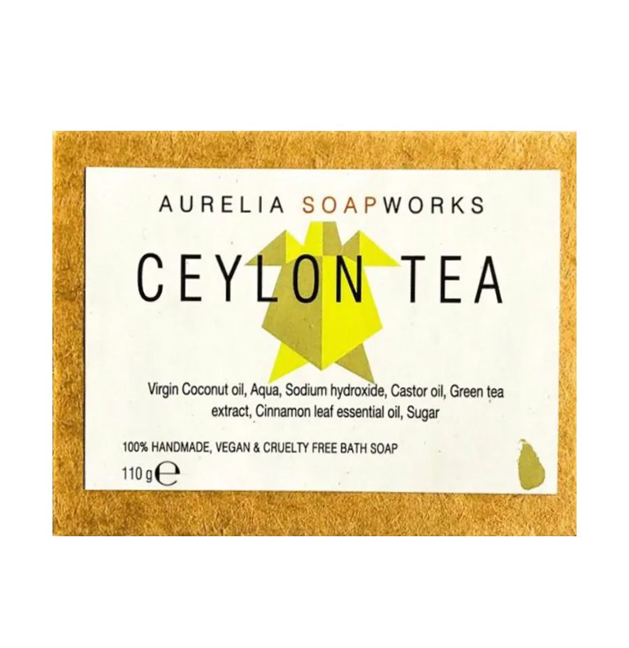

Tea Infusions have been sipped for centuries. This has not only been done for enjoyment, but also specifically used as healing teas. The ingredients extracted from various parts of the bark, stem, root, leaf or bud seem to have a remedy for just about any ailment. Apart from healthy tonics, tea is also being used to create products all around the house. Some of these items have even been marketed as luxury products which has enhanced the brand equity of tea.
Ceylon Tea & Mint – Bath & Shower Gel
LKR 3,750.00
A mild cleanser infused with a naturally protective & soothing blend of Green, White & Black Teas rich in natural anti-oxidants & nutrients. Organic fresh Aloe Vera & Honey hydrate skin, while Virgin Coconut & Green Olive cleanse & nourish, helping to improve overall health & well being. Enriched with pure Peppermint to cool & clarify the senses, while uplifting Spearmint & invigorating Eucalyptus help wash away daily stress & gently balance the senses.
Ingredients:
Ceylon Tea
Aloe-vera
Peppermint
Spearmint
Olive
Virgin-Coconut
Eucalyptus
How to use
Use in bath or shower. Pour into hands or on natural bath lotus. Gently massage all over body. Wash off.

Ceylon Tea Bath Soap
LKR 750.00
Solid bar soap with loose-leaf tea, lathers into a rich, luxurious foam.Creamy and bubbly. Notes of aromatic green tea leaves and subtle hints of cinnamon. Each bar is handmade in Sri Lanka. Palm free.100% Handmade, Vegan and Cruelty free. Aurelia Soapworks’ products use the minimum amount of ingredients necessary to achieve the maximum results. We strive to use locally made or sourced ingredients whenever possible.
Ingredients:
Green tea extract
Virgin Coconut oil
Aqua
Sodium hydroxide
Castor oil
Cinnamon leaf essential oil
Sugar
How to use
First lathering,then washing.Wet the soap and apply direcly to your body
Ceylon Tea & Ylang – Body Butter
LKR 4,750.00
A rich moisturiser infused with a naturally protective blend of Green, White & Black Teas - rich in natural anti-oxidants & nutrients. Helps soothe & calm skin after sun exposure, while improving visible youthfulness. Virgin coconut & Avocado improve overall skin health and help nourish & hydrate, while Rice bran, Olive & Sweet Almond soften & protect skin against dryness. Enriched with mystical YlangYlang & sensual Tuberose to help balance the senses & protect subtle energies.
Ingredients:
Ceylon-Tea
Sweet-Almond
Virgin-Coconut
Ylang-Ylang
Rice-Bran
Olive
How to use
Apply all over hands & body. Massage & leave on. Work extra on elbows, knees & other rough-dry areas.For Intensive Care apply generously & leave overnight.